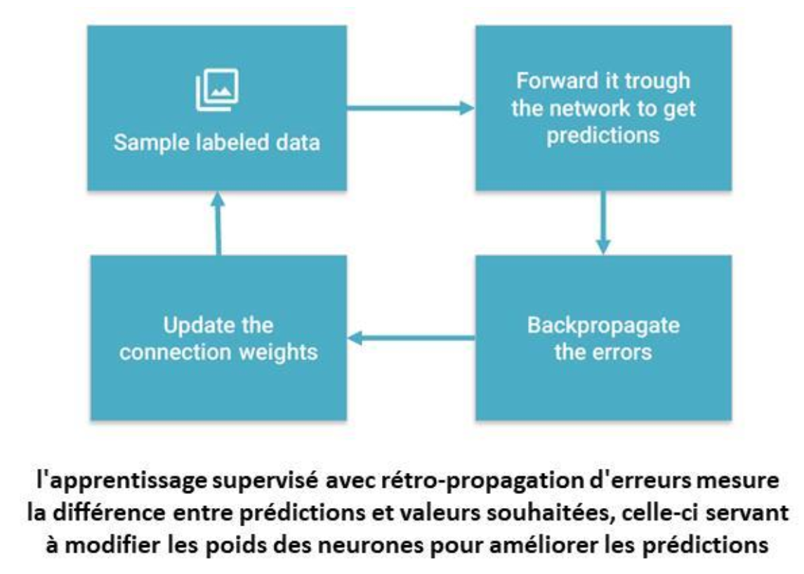
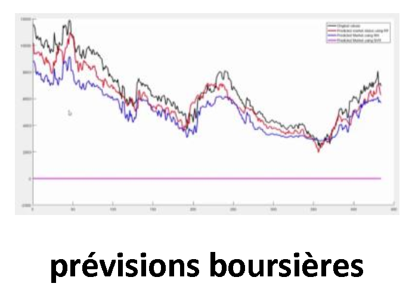
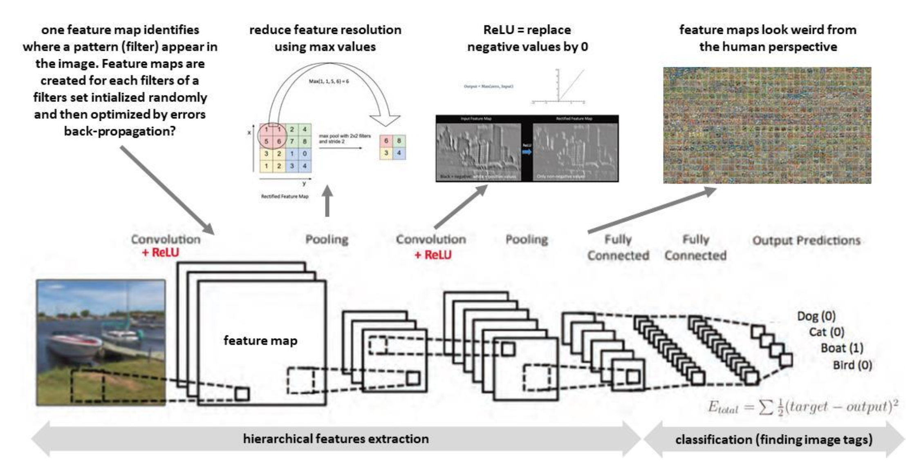
Citer : (Ezratty, 2018)
FTag: Ezratty-2018
Biblio: Ezratty, O. (2018). Les usages de l’intelligence artificielle. 522.
automd - automd-select -
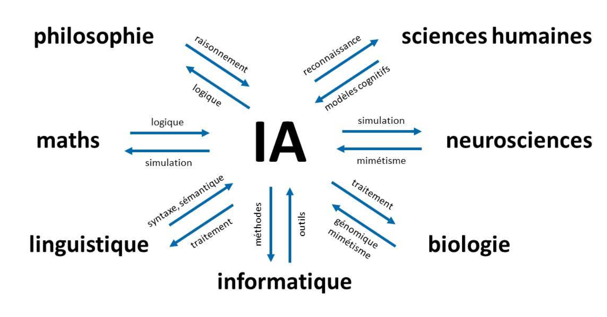
Elle recouvre les sciences et technologies qui permettent d’imiter, d’étendre et/ou d’augmenter l’intelligence humaine avec des machines.
Une autre définition courante de l’IA est le champ aca-démique de la création de logiciels et matériels dotés de certaines formes d’intelligence
L’IA a atteint l’âge de la retraite mais est encore adolescente et brouillonne.
L'intelligence artificielle suscite nombre de prophéties déconnectées de la réalité technologique. Une partie de ces envolées prend des termes techniques au pied de la lettre, sans compréhension de leur réelle signification. Il y aurait moins de fantasmes si on avait parlé de « classification automatique de motifs complexes » plutôt que d'« intelligence artificielle ».(Champlain, 2018)
[...] notion d’intelligence augmenté (Champlain, 2018)
d’intelligence humaine augmentée
Comme tout domaine scientifique complexe, l’IA n’a jamais été un terrain d’unanimité et cela risque de perdurer. Diverses écoles de pensée se disputent sur les approches à adopter.
Celle - ci est encore unique dans la capacité à réagir avec disce r- nement face à des situations nouvelles, à tirer profit de circonstances fortuites, à discerner le sens de messages ambigus ou contradictoires, à juger de l'importance relative de différents éléments d'une situation, à trouver des similitudes entre des situations malgré leurs différences, à établir des distin c- tions entre des situations malgré leurs similitudes, à synthétiser de nouveaux concepts malgré leurs différences ou à trouver de nouvelles idées
Qu'est-ce qu'une base de règles ?
McCarthy [...] langage LISP qui servit pendant plusieurs décennies à développer des solutions logicielles d’IA travaillant en logique formelle et à base de règles.
stade de l’AGI (IA général iste).
[...] l’IA symbolique, [...] Il recouvre diverses techniques de modélisation des connaissances et du raisonnement.
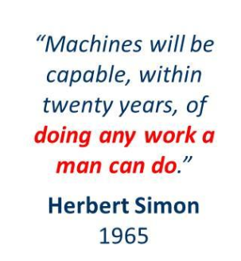
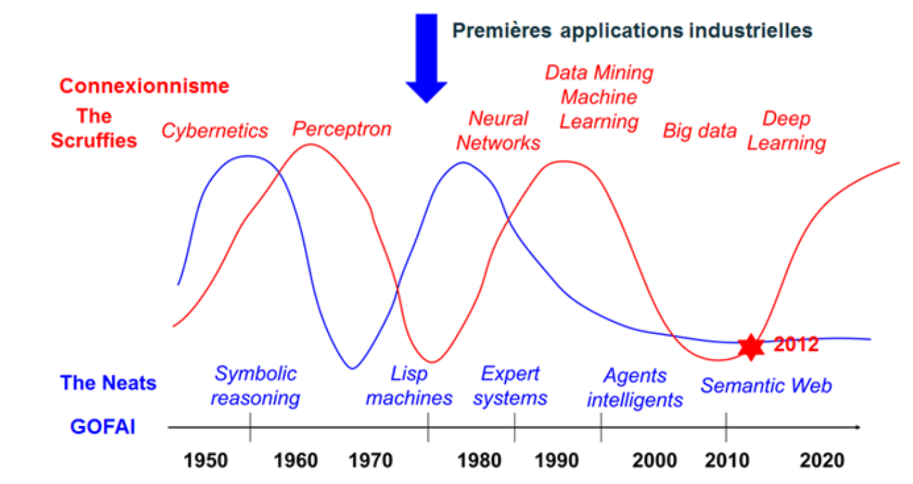
L’augmentation de la puissance du matériel qui a permis de diversifier la mise en œuvre de nombreuses méthodes jusqu’alors inaccessibles.
IA connexionniste
Les chercheurs doivent publier des exemples de codes sources pour illustrer leurs méthodes, sur Github qui peuvent alors être reproduits et vérifiés par la communauté des chercheurs et développeurs.
[...] le raisonnement inductif qui réalise des prévisions et des généralisations à partir d’observations .
Voir aussi: méthode probabiliste
L’IA symbolique modélise le raisonnement logique et représente les connaissances avec des objets et des symboles formels les associant entre eux (appartient à, fait partie de, est équivalent à, ...). C’est un raisonnement déductif qui s’appuie sur la logique reposant sur des faits et règles connu.
On utilise la logique connexionniste lorsque l’on ne peut pas modéliser un système complexe avec des règles établies ou bien, lorsque ces règles changent très souvent et rapidement [...]
langages de programmation déclaratifs
moteurs d’inférences
moteurs d’inférences utilisant des bases de règles
L’IA est en fait une appellation créée par un chercheur afin de faire parler de son domaine et lui permettant d’éviter d’être assimilé à des disciplines voisines comme les m athématiques, les stati s- tiques ou l’informatique.
Le transhumanisme est un mouvement culturel et intellectuel international prônant l'usage des sciences et des techniques afin d'améliorer la condition humaine notamment par l'augmentation des capacités physiques et mentales des êtres humains.
Wikipedia. (2020). Transhumanisme
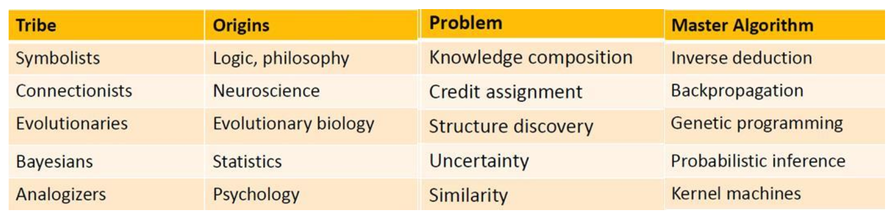
En pratique, de nombreux chercheurs ambitionnent de fusionner les approches symboliques et connexionnistes pour gérer du raisonnement automatique
L’IA est un ensemble de techniques permettant de résoudre des problèmes complexes en s’inspirant de mécanismes cognitifs humains, agissant de manièrerationnelle en fonction de faits,données et expériences, et capables d’atteindre de manière optimaleun ou plusieurs objectifs donnés.
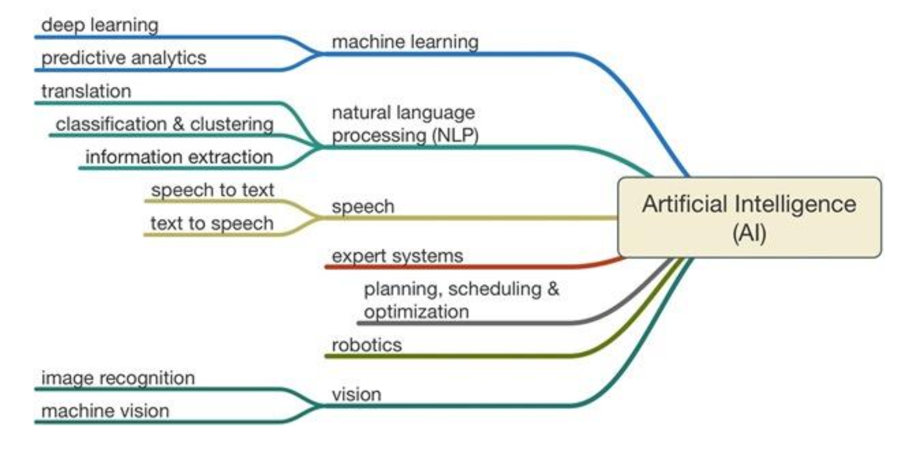
Dans le domaine du raisonnement automatisé, l’IA est censée apporter une rationnalité dont l’Homme ne fait pas toujours preuve. Là encore, nous sommes dans l’ordre de la complémentarité.
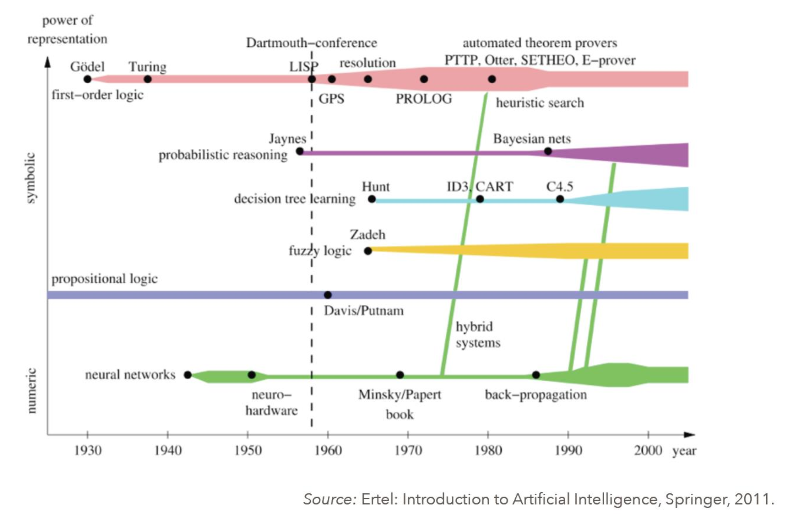
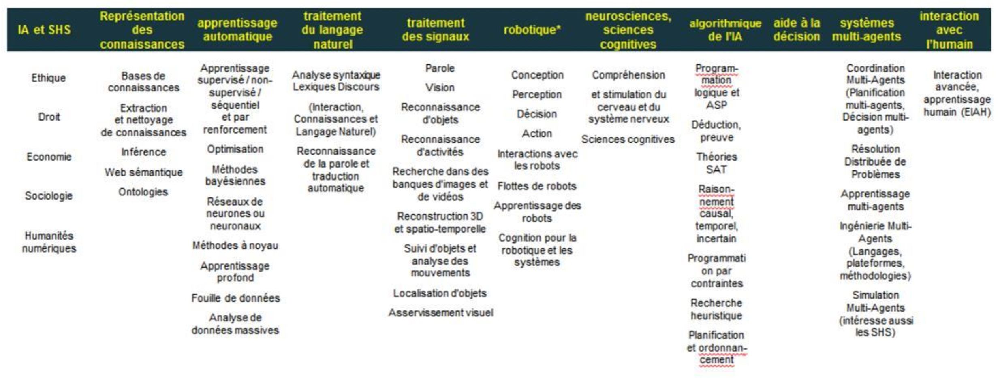
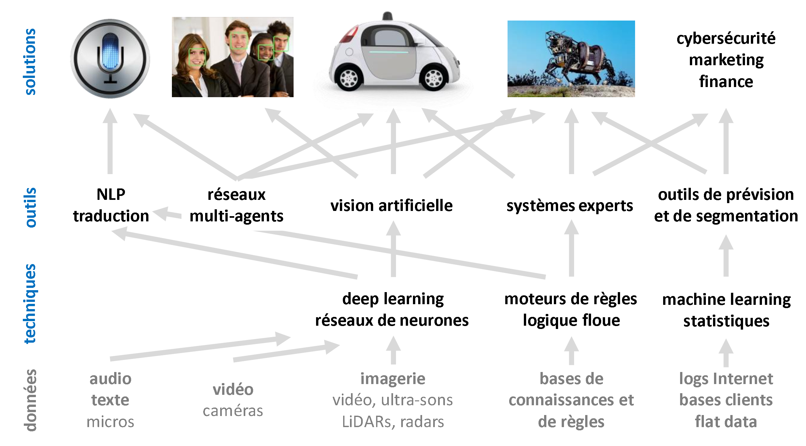
Ces briques sont des plus nombreuses. A tel point que leur intégration est un enjeu technique et métier de taille, peut-être le plus complexe à relever. (Maubant, 2014)
[Connecxionniste] [...] extrait des règles de données observées [...]
Ensuite ces données sont récupérées par une IA symbolique qui utilise comme données les règles générées par l'IA symbolique.
Ces règles peuvent à leur tour alimenter une IA symbolique qui exploite des faits et règles connus et formalisés pour résoudre [...]
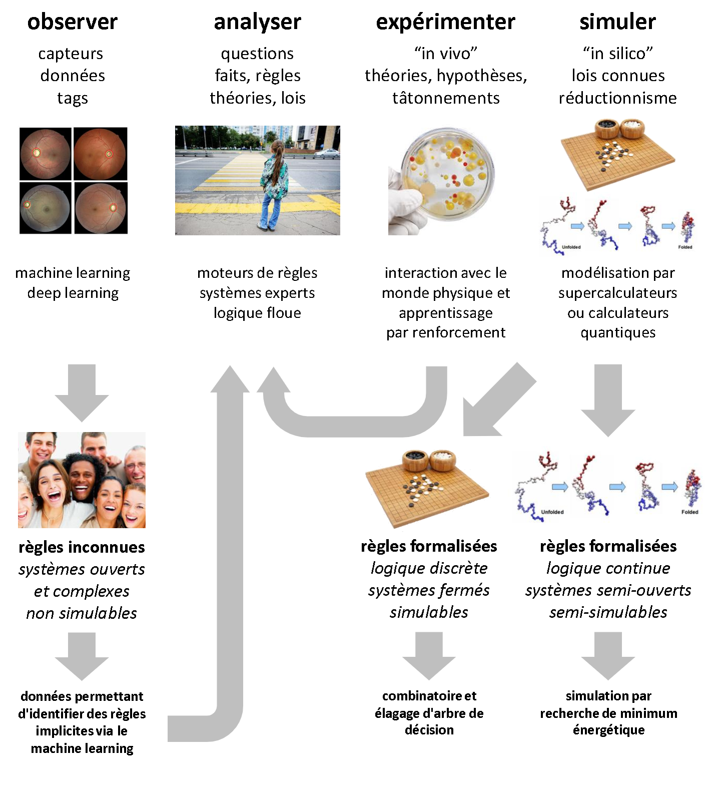
En quelque sorte, le machine learning est une brique d’alimentation du raisonnement automatique. (Buest 2017)
En quelque sorte, le machine learning est une brique d’alimentation du raisonnement automatique. (Buest 2017)
Comment l'IA élague-t-elle un arbre de décision ?
l’élagage d’un arbre de décision
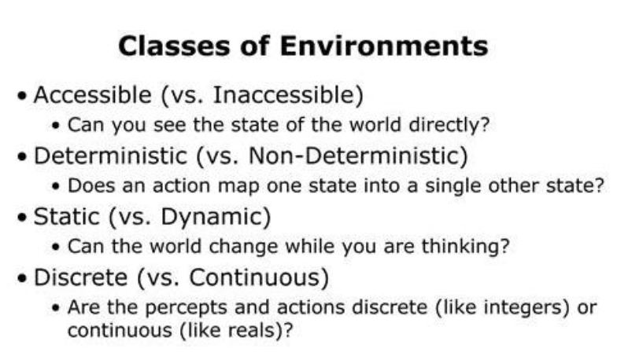
[...] l’IA connexionniste est une manière de contourner l’impossibilité de simuler le monde physique.
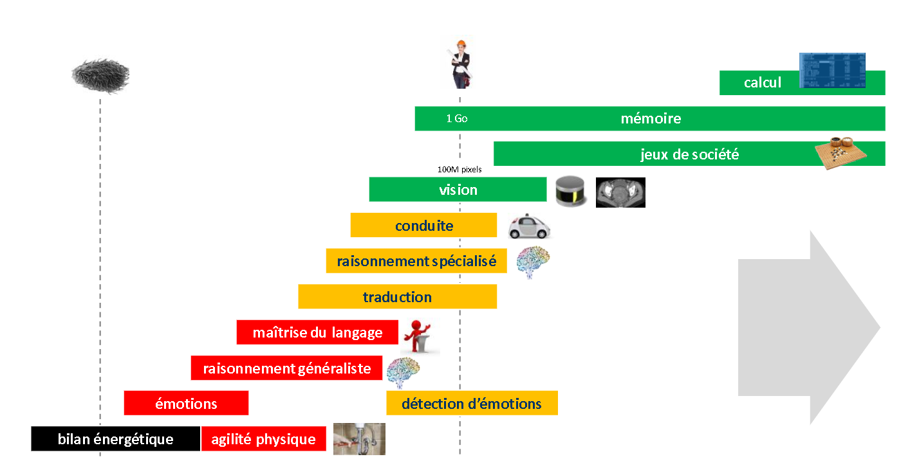
[...] faire du réductionnisme, en réduisant par grandes approximations [...]
[...] on l’observe (monde physique) et on utilise des méthodes probabilistes pour en déduire des règles empiriques et faire des prévisions approximatives.
raisonnement spécialisé
Ces techniques de machine learning sont basées sur des méthodes et outils probabilistes qui ne correspondent pas aux sens humains.
[...] trois catégories : les sens, le raisonnement et l’action.
L'IA pensera rationnellement, donc pas forcément comme des humains
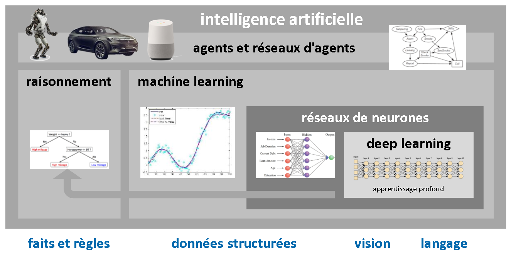
Le transfer learning , ou apprentissage par transfert, est une variante du deep learning qui permet d’entraîner un réseau de neurones à partir d’un réseau de neurones déjà entraîné pour le compléter , le mettre à jour ou l’utiliser dans un domaine voisin du domaine initial.
L’ IA affective qui exploite une panoplie large d’outils du machine learning et du deep learning voire du raisonnement automatique pour capter et classifier des éléments extérieurs des émotions humaines et agir en conséquence
La représentation de connaissances extrait de données textuelles non structurées via du deep learning et les exploite ensuite dans du raisonnement automatique avec les outils de l’IA symbolique
Les algorithmes évolutionnaires ou génétiques qui peuvent s’appuyer sur du deep learning et qui testent plusieurs versions de solutions pour ne conserver que les meilleures
Les réseaux de neurones constituent un sous-domaine du machine learning pour réaliser des tâches lorsque l’espace probabiliste géré est plus complexe.
[...] approches dites multimodales qui intègrent différents sens comme la vision et le langage.
Les réseaux d’agents ou systèmes multi-agents sont un domaine méconnu qui couvre la science de l’orchestration des briques techniques de l’IA pour créer des solutions complètes. [...] Les réseaux d’agents sont à la fois des objets conceptuels et des outils d’assemblage de briques logicielles de l’IA. Le principe d’un agent est qu’il est conceptuellement autonome, avec des entrées et sorties. L’assemblage d’agents dans des réseaux multi-agents est une version « macro » de la création de solutions d’IA.
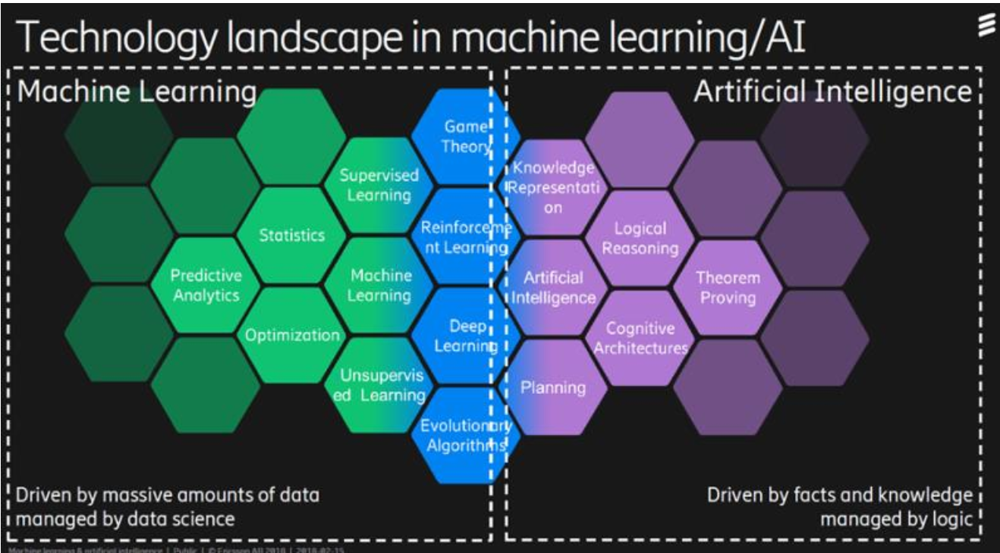
Il est possible de mélange la force brute et l'apprentissage automatique pour permettre une économies combinatoires (Ezratty, 2018)
Les réseaux bayésiens utilisent des modèles à base de graphes pour décrire des relations d’interdépendances statistiques et de causalité entre facteurs.
Entre autre ces réseaux peuvent faire une analyse de risques.
on ne sait toujours pas dire si le raisonnement humain s’appuie sur une manipulation de symboles à haut niveau ou par assemblage de connexions de bas niveau dans le cerveau [...]
Il y a une intention de rapprocher ces deux approches avec les recherches en intelligence artificielle.
Tout d’abord en exploitant le deep learning pour extraire des règles de documents en texte libre ou en associant textes et images dans des logiques multimodales, qui alimentent ensuite des moteurs de règles traditionnels. Et puis en cherchant à intégrer des briques de raisonnement dans le deep learning, le raisonnement étant l’aboutissement de techniques (toujours probabilistes) de traitement du langage et de gestion des connaissances.
Les moteurs de règles et les solveurs sont couramment employés dans les systèmes experts depuis les années 1980 [...]
Les moteurs de règles s’appuient sur la notion de raisonnement contraint par des règles et exploitant des bases de faits.
On fournit au moteur un ensemble de règles et de faits pouvant par exemple représenter le savoir des experts dans un domaine donné. Avec des règles proches de la programmation logique [...]
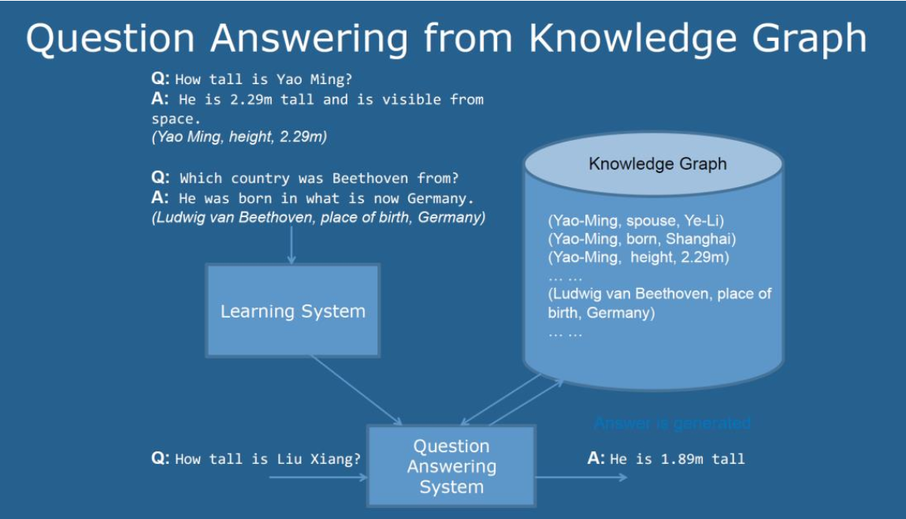
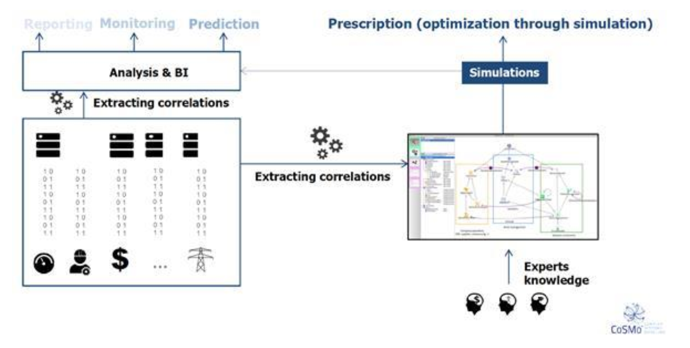
[...] K Engine, qui exploite une représentation de la connaissance sous forme d’ontologies et adopte une structure en graphe et non d’arborescence, ce qui la rend très ouverte. Cela permet de gérer la contradiction et la non complétude d’informations.
d’hybridation d’algorithmes et technologies pour résoudre
( aka :
programmation par contrainte,
logique propositionnelle,
logiques monotone et nonmonotone,
des notions de combinatoires et
d’exploration d’arbres de décision),
le traitement du langage et
la modélisation des connaissances.
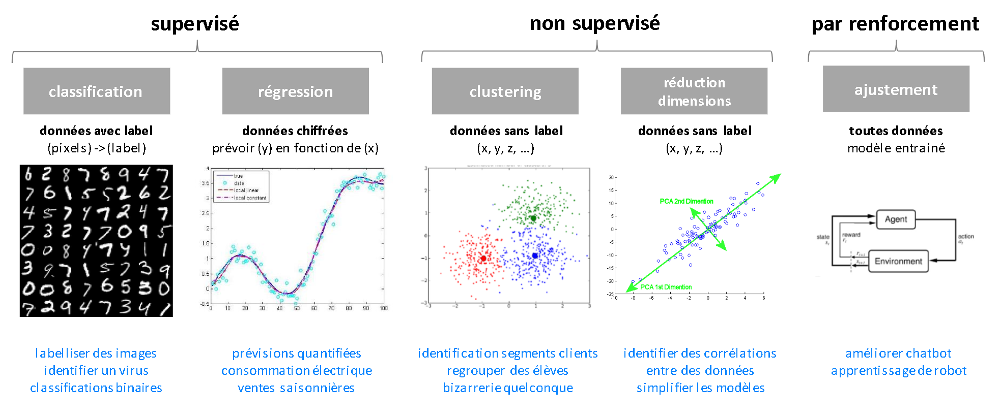
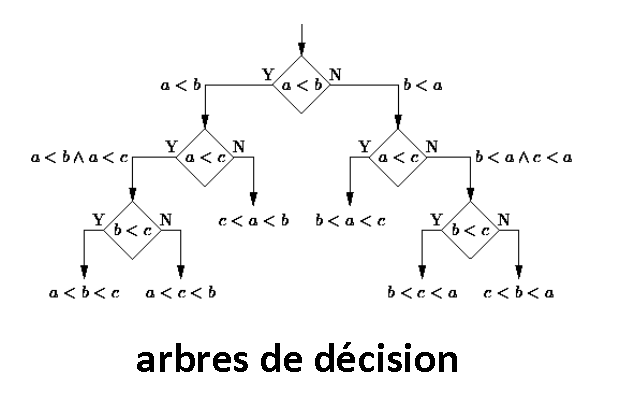
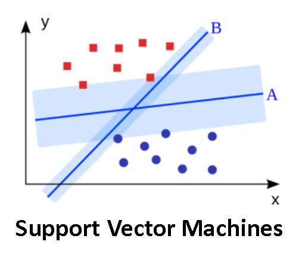
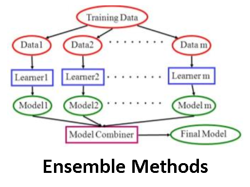
les méthodes des ensembles combinent plusieurs méthodes de classification pour en panacher les résultats et renforcer le poids des meilleures méthodes sans dépendre d’une seule d’entre elles.
Les méthodes des ensembles peuvent combiner des méthodes dites algébriques (avec une moyenne, une moyenne pondérée, un maximum, un minimum ou une médiane) et des méthodes par vote (utilisant la majorité, un vote pondéré, ...) [...]. Le choix des assemblages dépend de la distribution statistique des données d’entraînement.
Un modèle mathématique de machine learning est entraîné avec un jeu de données d’apprentissage. Cet entraînement consiste à déterminer la bonne méthode à utiliser ainsi que les paramètres mathématiques du modèle retenu. Il va générer un modèle entraîné, et ses variables de fonctionnement pour faire une prévision ou une classification.
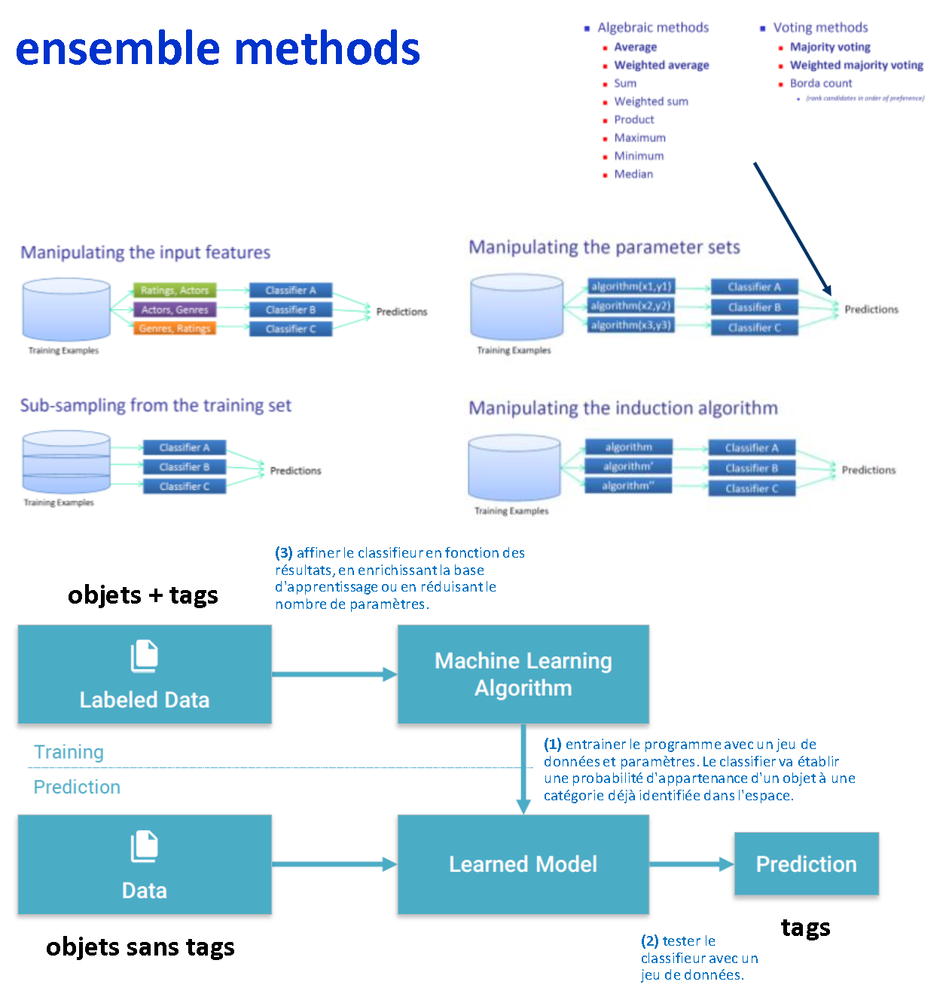
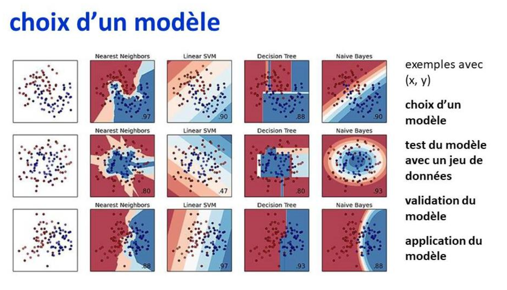
Le machine learning à base de réseaux de neurones permet de son côté de segmenter des données avec une répartition quasi-arbitraire alors que les méthodes élémentaires ci-dessus sont limitées de ce point de vue-là.
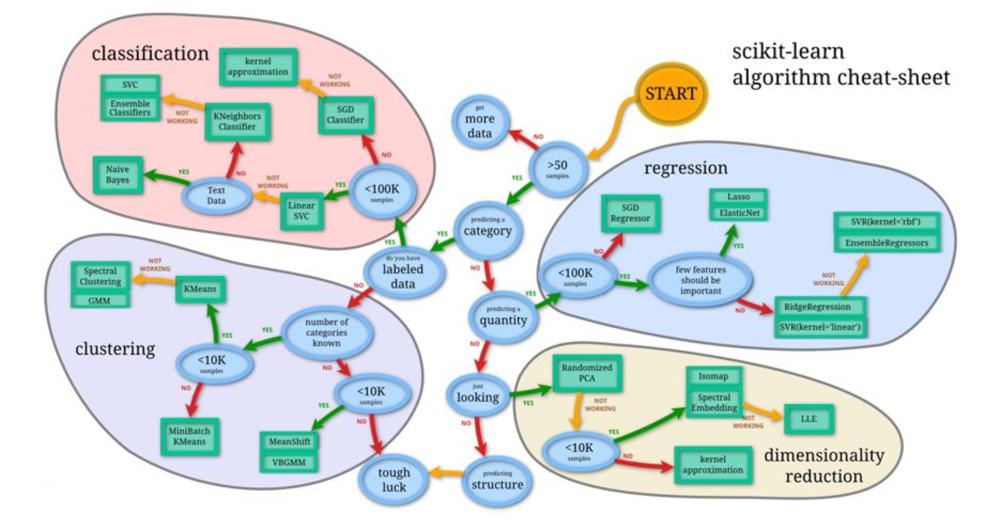
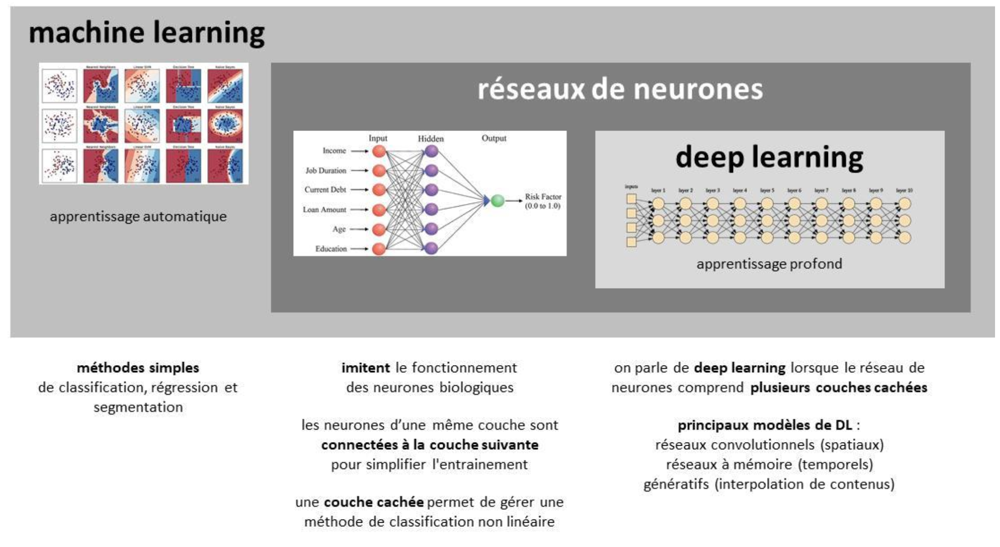
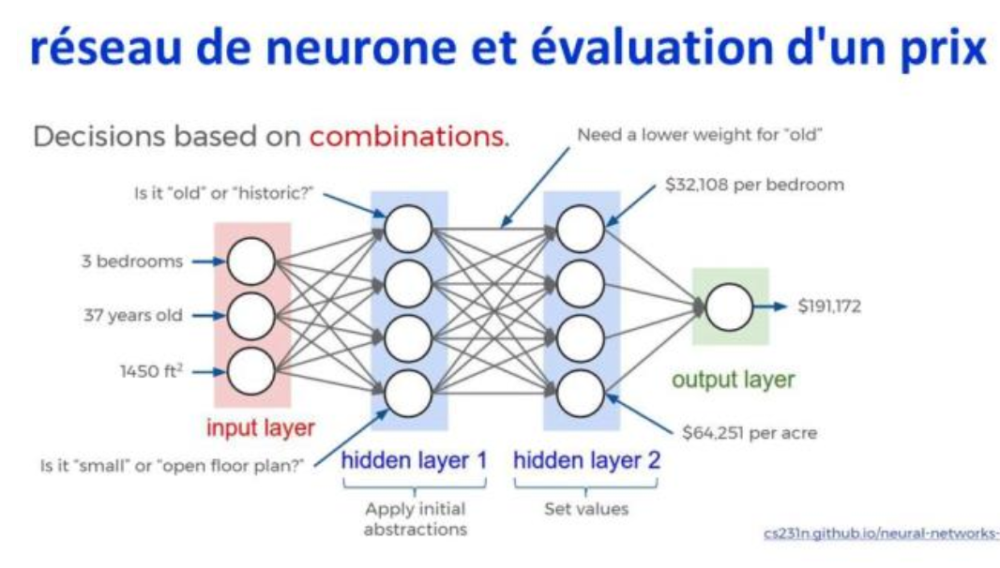
l’information circule de gauche à droite pendant l’exécution du réseau de neurone. On appelle aussi cela une inférence.
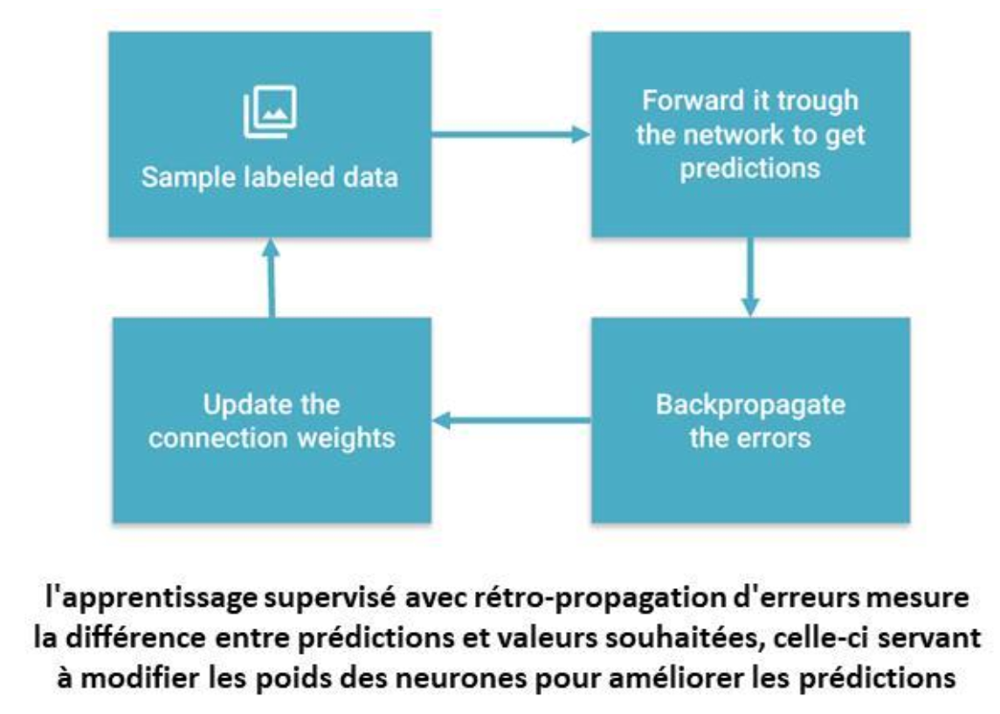
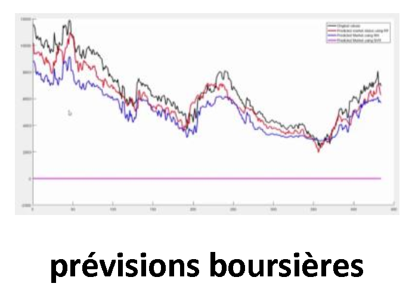
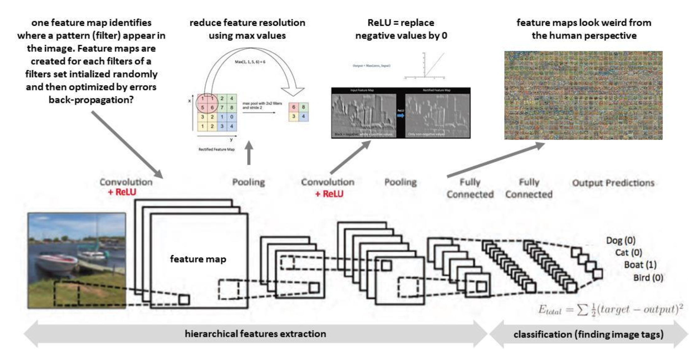
| ZotWeb | article-journal | |
| Src Url | [[Ezratty]] (2018) | |
Depuis 2015, l’intelligence artificielle (IA) est devenue l’une des grandes priorités des grands acteurs de l’économie numérique et des entreprises. La vague de l’IA commence à égaler celles de l’Internet et de la mobilité en termes d’impact. Il est plutôt difficile d’y échapper ! C’est devenu un outil de la compétitivité des entreprises aussi bien des secteurs du numérique que du reste de l’économie.
L’IA est aussi devenue rapidement un sujet de société et un objet politique. Elle génère son lot de questions sur le futur du travail, sur l’éthique, sur la répartition des richesses, sur la souveraineté
économique et même sur le devenir de l’espèce humaine comme cela a été souligné entre autres
dans le Rapport de la Mission Villani publié en mars 2018.
Cette vague technologique est atypique dans plusieurs dimensions. Les technologies et méthodes de l’IA sont méconnues ou assimilées à tors et à travers, y compris par la majorité des professionnels du numérique, d’où la propagation de nombreux mythes à son sujet, un peu trop directement inspirés par la science-fiction ou par les thèses singularistes. On croit par exemple que le « deep learning » ou « apprentissage profond » raisonne alors qu’il ne fait qu’appliquer, en général, des modèles probabilistes. De même, dans le machine learning, l’apprentissage non-supervisé n’est pas de l’apprentissage supervisé autonome. La sémantique de l’IA est donc porteuse de contre-sens qu’il faut décrire et éviter. Le sens même de l’appellation « IA » est sujet à d’infinis débats, trop connotés d’accents anthropomorphiques alors que l’IA est artificielle et donc différente de l’intelligence humaine même si les deux ont quelques zones de recouvrement.
Histoire et sémantique de l’IA
Comme tout domaine scientifique complexe, l’IA n’a jamais été un terrain d’unanimité et cela risque de perdurer. Diverses écoles de pensée se disputent sur les approches à adopter.
Citer : (Ezratty, 2018)
biblio: Ezratty, O. (2018). Les usages de l’intelligence artificielle. 522.
Le cerveau met d’ailleurs en œuvre une logique bayésienne pour ses propres prises de décision
Il existe des problèmes trop complexes pour les ordinateur
[[AIProblematic]]
Les technologies et méthodes de l’IA sont méconnues ou assimilées à tors et à travers, y compris par la majorité des professionnels du numérique, d’où la propagation de nombreux mythes à son sujet, un peu trop directement inspirés par la science-fiction ou par les thèses singularistes.
On croit par exemple que le «deep learning » ou « apprentissage profond » raisonne alors qu’il ne fait qu’appliquer, en général, des modèles probabilistes.
comprendre les usages et techniques de l’IA dans les entreprises et les aider à en tirer le meilleur parti
Leur création et inté- gration est encore une affaire de bricolage et de tâtonnements, si ce n’est d’un véritable artisanat.
Chercher un "expert en IA" 3 revient maintenant à demander "un expert en logiciels" ou un "expert en informatique" sans compter le top avec "l’expert en transformation digitale".
[...] de nombreux outils de développement et d’intégration arrivent sur le marché qui permettent à des développeurs moins qualifiés, voire même à des cadres, de créer eux-mêmes des solutions intégrant des briques d’IA.
[[AIReview]]
Comment se préparer au niveau des compétences ?
Comment intégrer l’IA dans les autres dynamiques d’innovations liées au numérique ?
Comment va évoluer le métier de développeur ?
Pour certains, seul le deep learning est digne de faire partie de l’IA et le machine learning et même les moteurs de règles, pas du tout.
Certaines ont une dimension anthropomorphique comme la vision artificielle
identifier des corrélations, des tendances ou faire des prévisions
TensorFlow
PyTorch
scikit-learn
Keras
L’ histoire moderne de l’intelligence artificielle a cependant véritablement démarrée au moment du Summer Campde Darmouth, organisé entre le 18 juin et le 17 août 1956
Elle recouvre les sciences et technologies qui permettent d’imiter, d’étendre et/ou d’augmenter l’intelligence humaine avec des machines.
L’expression « intelligence artificielle » fut couchée sur papier le 31 août 1955
L’IA est en fait une appellation créée par un chercheur afin de faire parler de son domaine et lui permettant d’éviter d’être assimilé à des disciplines voisines comme les mathématiques, les statistiques ou l’informatique.
L’IA a atteint l’âge de la retraite mais est encore adolescente et brouillonne.
[...] notion d’intelligence augmenté (Champlain, 2018)
parfois dépasse largement des composantes isolées de l’intelligence humaine
d’intelligence humaine augmentée
Dans le domaine du raisonnement automatisé, l’IA est censée apporter une rationnalité dont l’Homme ne fait pas toujours preuve. Là encore, nous somme s dans l’ordre de la complémentarité.
Celle-ci (IH) est encore unique dans la capacité à réagir avec discernement face à des situations nouvelles, à tirer profit de circonstances fortuites, à discerner le sens de messages ambigus ou contradictoires, à juger de l'importance relative de différents éléments d'une situation, à trouver des similitudes entre des situations malgré leurs différences, à établir des distinctions entre des situations malgré leurs similitudes, à synthétiser de nouveaux concepts malgré leurs différences ou à trouver de nouvelles idées
[[IH]]
Vincent Champain, avril 2018 qui évoque cette notion d’intelligence augmentée
réseaux de neurones pour la reconnaissance des formes,
systèmes experts
[...] langage LISP qui servit pendant plusieurs décennies à développer des solutions logicielles d’IA travaillant en logique formelle et à base de règles.
stade de l’AGI (IA général iste).
[...] l’IA symbolique, [...] Il recouvre diverses techniques de modélisation des connaissances et du raisonnement.
Premiers chatbots
On vit aussi apparaître les ancêtres de catégories de solutions d’IA courantes aujourd’hui avec l’un des premiers chatbots, simulant un dialogue avec un psy, ELIZA entre 1964 et 1966 .
transhumanisme
Promesse non-tenues
systèmes experts
L’augmentation de la puissance du matériel qui a permis de diversifier la mise en œuvre de nombreuses méthodes jusqu’alors inaccessibles.
IA connexionniste
Les chercheurs doivent publier des exemples de codes sources pour illustrer leurs méthodes, sur Github qui peuvent alors être reproduits et vérifiés par la communauté des chercheurs et développeurs.
Les nombreuses applications commerciales de l’IA mêlant le machine learning, les objets connectés, la mobilité et le big data
[...] connexionnisme avec apprentissage par essais-erreurs ou par renforcement
Connexionisme et symbolisme
Les partisans du connexionnisme
Les partisans du symbolisme
le raisonnement inductif qui réalise des prévisions et des généralisations à partir d’observations .
L’IA symbolique modélise le raisonnement logique et représente les connaissances avec des objets et des symboles formels les associant entre eux (appartient à, fait partie de, est équivalent à, ...). C’est un raisonnement déductif qui s’appuie sur la logique reposant sur des faits et règles connu.
On utilise la logique connexionniste lorsque l’on ne peut pas modéliser un système complexe avec des règles établies ou bien, lorsque ces règles changent très souvent et rapidement [...]
[...] le fonctionnement de l’intelligence humaine est toujours l’objet de désaccords scientifiques
langages de programmation déclaratifs
moteurs d’inférences
moteurs d’inférences utilisant des bases de règles
anthropomorphique, adjectif
Qui a rapport à l'anthropomorphisme (tendance à attribuer aux animaux et aux choses des réactions humaines).
Qu'est-ce qu'une méthodes statistiques ?
Qu'est-ce qu'un réseaux bayésiens ?
Qu'est-ce que le TDNN (Time d elay neural networks) d'Alexandre Waibel ?
Il y a cinq grands courants dans l'IA
Les 5 grand courrants de l'IA.
En pratique, de nombreux chercheurs ambitionnent de fusionner les approches symboliques et connexionnistes pour gérer du raisonnement automatique
L’IA est un ensemble de techniques permettant de résoudre des problèmes complexes en s’inspirant de mécanismes cognitifs humains, agissant de manièrerationnelle en fonction de faits,données et expériences, et capables d’atteindre de manière optimaleun ou plusieurs objectifs donnés.
Cette rationalité est habituellement limitée par notre volonté, le poids émotionnel de notre cerveau limbique et notre capacité d’optimisation.
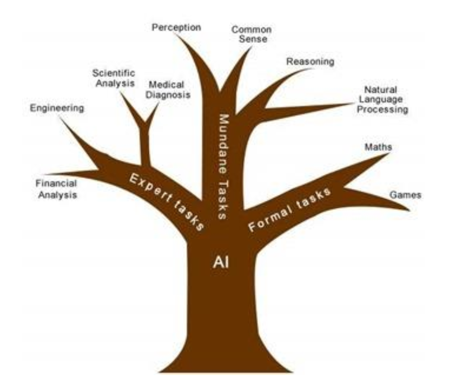
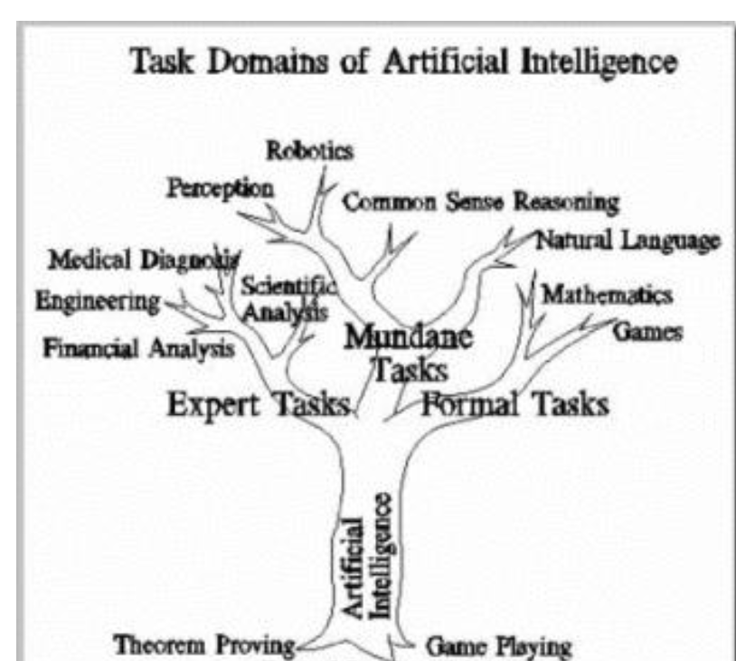
Quelles-sont les différentes segmentation du champ de l’IA ?
Le symbolisme qui se focalise sur la pensée abstraite et la gestion des symboles [...]
Le symbolisme modélise notamment les concepts sous la forme d’objets reliés entre eux par des prédicats logiques ( appartient à, etc).
Le connexionnisme se focalise sur la perception, dont la vision, la reconnaissance des formes et s’appuie notamment sur les réseaux neuronaux artificiels [...]
Le comportementalisme s’intéresse aux pensées subjectives de la perception. [...] intégrer l’informatique affective (ou affective computing) qui étudie les moyens de reconnaître, exprimer, synthétiser et modéliser les émotions humaines.
inventer l’IA qui segmente convenablement l’IA
Apparition du "back-propagation" en 1985.
En francais, qu'est-ce que le "back-propagation" ?
Rapport France IA, 2017
Ces briques sont des plus nombreuses. A tel point que leur intégration est un enjeu technique et métier de taille, peut-être le plus complexe à relever
L’originalité est rarement dans la création des briques mais plutôt dans leur sélection, leur combinaison, leur assemblage [...] (Maubant, 2014)
[...] extrait des règles de données observées [...]
Ces règles peuvent à leur tour alimenter une IA symbolique qui exploite des faits et règles connus et formalisés pour résoudre
Fig. Typologie (Segmantation de L'IA), (Ezratty, 2018)
En quelque sorte, le machine learning est une brique d’alimentation du raisonnement automatique. (Buest 2017)
L’expérimentation avec le monde réel permet d’en extraire des règles qui peuvent à leur tour également alimenter de l’IA symbolique.
Fig. Segmentation IA Ezratty, 2018
l’élagage d’un arbre de décision
[...] faire du réductionnisme, en réduisant par grandes approximations [...]
Est-ce que le système est dynamique ou statique ?
[...] l’IA connexionniste est une manière de contourner l’impossibilité de simuler le monde physique.
Le raisonnement généraliste n’est pas encore possible avec l’IA actuelle. (Anon 2018)
[...] on l’observe (monde physique) et on utilise des méthodes probabilistes pour en déduire des règles empiriques et faire des prévisions approximatives.
raisonnement spécialisé
Ces techniques de machine learning sont basées sur des méthodes et outils probabilistes qui ne correspondent pas aux sens humains.
[...] trois catégories : les sens, le raisonnement et l’action.
l'essentiel des solutions de traitement de l’image, du langage naturel et de la perception relèvent du deep learning [...]
qui gèrent des données structurées et notamment de la prévision relèvent du machine learning
qui relèvent du raisonnement et de la planification relèvent de différentes variations de moteurs de règles, solvers et outils associés.
Cette segmentation couvre les principaux usages actuels de l’IA
Le transfer learning , ou apprentissage par transfert, est une variante du deep learning qui permet d’entraîner un réseau de neurones à partir d’un réseau de neurones déjà entraîné pour le compléter , le mettre à jour ou l’utiliser dans un domaine voisin du domaine initial.
L’ IA affective qui exploite une panoplie large d’outils du machine learning et du deep learning voire du raisonnement automatique pour capter et classifier des éléments extérieurs des émotions humaines et agir en conséquence
La représentation de connaissances extrait de données textuelles non structurées via du deep learning et les exploite ensuite dans du raisonnement automatique avec les outils de l’IA symbolique
Les algorithmes évolutionnaires ou génétiques qui peuvent s’appuyer sur du deep learning et qui testent plusieurs versions de solutions pour ne conserver que les meilleures
Les briques du raisonnement et de la planification
Le machine learning peut s’appuyer sur des réseaux de neurones simples pour les tâches complexes portant sur des données multidimentionnelles.
Les réseaux de neurones constituent un sous-domaine du machine learning pour réaliser des tâches lorsque l’espace probabiliste géré est plus complexe.
Le deep learning ou apprentissage profond, permet d ’aller plus loin que le machine learning pour reconnaître des objets complexes comme les images, l’écriture manuscrite , la parole et le langage . Le deep learning exploite des réseaux de neurones multicouches , sachant qu’il en existe de très nombreuses variantes. Ce n’est cependant pas la resolution de tous ce que l’IA cherche à traiter. Le deep learning permet aussi de générer des contenus ou d’améliorer des contenus existants [...]
[...] approches dites multimodales qui intègrent différents sens comme la vision et le langage.
Les réseaux d’agents ou systèmes multi-agents sont un domaine méconnu qui couvre la science de l’orchestration des briques techniques de l’IA pour créer des solutions complètes. [...] Les réseaux d’agents sont à la fois des objets conceptuels et des outils d’assemblage de briques logicielles de l’IA. Le principe d’un agent est qu’il est conceptuellement autonome, avec des entrées et sorties. L’assemblage d’agents dans des réseaux multi-agents est une version « macro » de la création de solutions d’IA.
Cette classification n’est pas la seule du marché. Il y en a quasiment autant que de spécialistes et non spécialistes du domaine de l’IA
classification d’Ericsson (2012)
La force brute est l'inverse métaphorique de l'intelligence. C'est un moyen courant de simuler l'intelligence humaine ou de la dépasser.
[[IA-DEF-ForceBrute]]
La force brute n'est opérationnelle que si la combinatoire à tester reste dans l'enveloppe de puissance de l'ordinateur
[[IA-LIMITE]]
Il est possible de mélange la force brute et l'apprentissage automatique pour permettre une économies combinatoires (Ezratty, 2018)
d’un apprentissage par renforcement, le système apprenant en jouant contre lui -même.
[...] élague son arbre de recherche de positions avec une architecture plus simple et unifiée à base de réseaux de neurones récursifs
La force brute est utilisée dans de nombreux domaines comme dans les moteurs de recherche ou la découverte de mots de passe simples.
La force brute s’est aussi généralisée parce que la puissance des ordinateurs le permet : ils tournent plus vite, sont distribuables, le stockage coûte de moins en moins cher, les télécommunications sont abordables et les capteurs de plus en plus nombreux, des appareils photo/vidéo des smartphones aux capteurs d’objets connectés divers.
[[IA-Etat]]
Les méthodes statistiques et notamment bayésiennes permettent de prévoir la probabilité d'événements en fonction de l'analyse d'événements passés.
[[IA-A-Predict]]
Les réseaux bayésiens utilisent des modèles à base de graphes pour décrire des relations d’interdépendances statistiques et de causalité entre facteurs
l’analyse de risques
Vide de connaissance dans la combinaisons de la logique floue aux moteurs de règles.
[...] combinaisons sont possibles comme lorsque l’on intègre la notion de logique floue aux moteurs de règles.
Citations de Brian Bannon.
Pour plusieurs tâches, des mots et des combinaisons de mots fournissent toute la mécanique représentionelle requise pour apprendre profondément d'un texte. (Halevy, Norvig, and Pereira 2009)
Le raisonnement automatique fait partie du vaste champ de l’IA symbolique appliquant de la logique formelle.
La formalisation du raisonnement humain remonte à Aristote et à l’identification de règles formelles utilisées dans l’argumentation philosophique ...
Suivirent les travaux de Georges Boole au 19e siècle et son al gèbre formalisant l’usage de règles de raisonnement, puis de nombreux développements théoriques, notamment autour de la logique formelle, des calculs de prédicats, de la logique du premier et du second ordre.
on ne sait toujours pas dire si le raisonnement humain s’appuie sur une manipulation de symboles à haut niveau ou par assemblage de connexions de bas niveau dans le cerveau
Pendant longtemps, les approches symboliques et connexionnistes se sont opposées. Les recherches les plus récentes en IA visent à les rapprocher.
Prolog est un langage déclaratif qui sert à gérer de la logique du premier ordre avec la déclaration de relations, faits et règles.
Les systèmes experts répondent à des questions dans des domaines spécifiques dont on a codifié la connaissance. Cela permit à l’IA de se rendre utile dans des domaines spécifiques [...]
Les moteurs de règles et les solveurs sont couramment employés dans les systèmes experts depuis les années 1980
Les moteurs de règles s’appuient sur la notion de raisonnement contraint par des règles et exploitant des bases de faits .
On peut alors interroger le système [...] pour répondre à la question. Les moteurs de règles utilisent la théorie des graphes et la gestion de contraintes.
Un système expert s’appuie sur deux composantes clés : une base de connaissance , générée souvent manuellement ou éventuellement par exploitation de bases de connaissances existantes, et un moteur de règles , plus ou moins générique, qui va utiliser la base de connaissance pour répondre à des questions précises.
Les systèmes experts peuvent expliquer le rationnel de leur réponse. La traçabilité est possible jusqu’au savoir codifié dans la base de connaissances, un avantage que les réseaux de neurones du deep learning et le machine learning n’ont pas encore.
La mise en place de systèmes experts se heurtait à la difficulté de capter la connaissance des experts.
Il existe d’autres types de systèmes experts qui mettent en œuvre la notion de programmation par contraintes, permettant d’atteindre un objectif en fonction d’une base de règles, d’objectifs et de contraintes opérationnelles.
Les logiciels de moteurs de règles du marché son t appelé BRMS pour Business Rule s Manag e- ment Systems .
[...] concept plus large de Decision Management Systems(DMS) qui associent des moteurs de règles et des outils d'analytics.
Cycorp est une sorte de laboratoire de recherche privé en IA financé par des contrats du gouvernement US, dont la DARPA, et d’entreprises privées. Il propose une suite d’outils en open source et licence commerciale permettant d’exploiter des dictionnaires, ontologies et bases de connaissances pour répondre à des questions d’analystes.
L’initiative open source Schema.org lancée par Google, Microsoft, Yahoo et le Russe Yandex propose de son côté des millions de types, descriptions de faits exploitables par les moteurs de recherche et les moteurs de règles. Il permet [...] standardiser la nomenclature utilisée dans les descriptifs [...].
Les outils dotés de capacités de raisonnement continuent d’évoluer pour faire avancer le champ de la représentation des connaissances et du raisonnement. Les techniques associées sont moins connues que celles du machine learning et du deep learning, ce d’autant plus qu’elles sont de plus en plus hybrides. Ainsi, un moteur de règles peut-il exploiter des règles elles-mêmes générées par analyse du langage dans des réseaux de neurones récurrents.
Le deep learning et les réseaux de neurones récurrents que nous verrons plus loin alimentent maintenant couramment les bases de connaissances et les moteurs de règles qu’ils ont contribué indirectement à faire décliner!
Knowledge Graph s
Les systèmes experts peuvent aussi être alimentés par l’exploitation de données opérationnelles (big data, machine learning).
CosML qui sert à représenter les états ainsi que les comportements des systèmes c om- plexes et à les étudier grâce à de la simulation .
Le système exploite des règles métier et des corrélations extraites de données de production via des techniques de machine learning ( schéma ci-dessous ).
[...] K Engine, qui exploite une représentation de la connaissance sous forme d’ontologies et adopte une structure en graphe et non d’arborescence, ce qui la rend très ouverte. Cela permet de gérer la contradiction et la non complétude d’informations.
la logique floue n’est pas utilisée de manière très courante, notamment du fait que les systèmes experts ne sont plus à la mode depuis une quinzaine d’année.
vise à résoudre de la logique et d’optimisation qui sont très nombreux dans les entreprises
opérationnelle La planification est une autre branche de l’IA symbolique.
Comment allouer ses ressources pour qu’elles soient les mieux utilisées ?
Elles peuvent faire appel à des algorithmes ad-hoc, à de la simulation, à des réseaux d’agents intelligents, une méthode qui est à la frontière entre l’intelligence artificielle et l’étude des systèmes complexes
d’hybridation d’algorithmes et technol o- gies pour résoudre
programmation par contrainte
logique propositionnelle
logiques monotone et non-monotone
notions de combinatoires et d’exploration d’arbres de décision
traitement du langage
modélisation des connaissances
à faire
utilise des méthodes probabilistes pour apprendre à partir des données sans être programmé explicitement
[...] vise notamment à identifier des tendances, à faire des prévisions sur des données (régressions linéaires et non linéaires), à découvrir des corrélations entre données et événements [...] , à segmenter des jeux de données [...] , à reconnaître des objets [...] , le tout en exploitant des données d’entraînement.
donne aux machines la capacité d’apprendre sans être explicitement programmées.
Le choix des méthodes reste pour l’instant manuel, même si certaines startups essayent d’automatiser ce processus.
L’apprentissage automatique s’appuie sur des données existantes.
Les données sont donc absolument critiques pour la qualité des résultats.
[...] doit pouvoir s’adapter à différentes contraintes comme une évolution permanente des données d’entraînement, ainsi que leur incomplétude et leur imperfection.
L’ apprentissage supervisé avec la classification qui permet de labelliser des objets
la régression qui permet de réaliser des prévisions sur des valeurs numériques .
L’apprentissage est supervisé car il exploite des bases de données d’ entraînement qui contiennent des labels ou des données contenant les réponses aux questions que l’on se pose. En gros, le système exploite des exemples et acquiert la capacité à les généraliser e nsuite sur de nouvelles données de production.
L’ apprentissage non supervisé avec le clustering et la réduction de dimensions.
bases de données non labellisées
Ce n’est pas un équivalent fonctionnel de l’apprentissage supervisé qui serait automatique
Le clustering permet d’isoler des segments de données spatialement séparés entre eux
La réduction de dimensions (ou embedding) vise à ré duire la dimension de l’espace des données, en choisissant les dimensions les plus pertinentes.
L’ apprentissage par re nforcement pour l’ajustement de modèles déjà entraînés en fonction des réactions de l’environnement
forme d’apprentissage supervisé incrémental
L’une des variantes de l’apprentissage par renforcement est l’a pprentissage s u- pervisé autonome notamment utilisé en robotique où l’IA entraîne son modèle en déclenchant d’elle - même un jeu d’actions pour vérifier ensuite leur résultat et ajuster son compor tement.
La classification utilise un jeu de données d’entraînement associé à des descriptifs (les classes) pour la détermination d’un modèle.
Il s’agit de pouvoir associer une donnée complexe comme une image ou un profil d’utilisateur à une classe d’objet, les différentes classes possibles étant fournies a priori par le concepteur.
génère un modèle qui permet de prédire la classe d’une nouvelle donnée fournie en entrée.
Les arbres de décision [...] exploitent des critères discriminants, comme dans un moteur de règles. Ils permettent de classifier un objet en se posant successivement des questions (comparaison de données, ...). Il en existe plusieurs sortes, [...] qui peuvent utiliser des branches multiples à chaque nœud.
Les Support Vector Machines (SVM) linéaires cherchent à identifier une droite ou un hyperplan dans le cas d’un modèle à plusieurs dimen sions qui permett e de distin guer les classes d’objets les unes des autres de manière binaire en essayant de les séparer par une marge,
Les SVM peuvent utiliser un modèle non linéaire lorsque les objets à séparer dans l’espace ne peuvent pas être isolés de part et d’autre d’un hyperplan. On recherche alors une fonction qui va transformer ces données dans un espace à deux ou trois dimension
Les classifications naïves bayésiennes utilisent les probabilités pour d épartager les objets dans des classes en fonction de caractéristiques bien établies
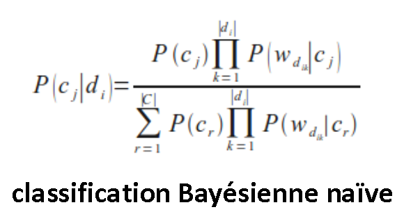
chaque hypothèse de départ, on associe une probabilité. L’observation d’une ou de plusieurs instances peut modifier cette probabilité. On peut parler de l’hypothèse la plus probable au vu des instances observées. Les probabilités bayésiennes présupposent l’indépendance des attributs utilisés .
Les méthodes des ensembles combinent plusieurs méthodes de classification pour en panacher les résultats et renforcer le poids des meilleures méthodes sans dépendre d’une seule d’entre elles
Les méthodes des ensembles peuvent combiner des méthodes dites algébriques (avec une moyenne, une moyenne pondérée, un maximum, un minimum ou une médiane) et des méthodes par vote (utili sant la majorité, un vote pondéré, ...),
Un modèle mathématique de machine learning est entraîné avec un jeu de données d’apprentissage. Cet entraînement consiste à déter miner la bonne méthode à utiliser ainsi que les paramètres mathé matiques du modèle retenu. Il va générer un modèle entraîné, et ses variables de fonctionnement pour faire une prévision ou une classificati on.
Les spécialistes du machine learning testent habituellement différentes méthodes de classification pour identifier celle qui est la plus efficace compte-tenu du jeu de données d’entraînement
es régressions utilisent plusieurs paramètres en entrée
différentes formes de régression, nota mment linéaire et non linéaire.
décrit les méthodes de régression qui suivent plus ou moins de près les variations observées
Les régressions peuvent être aussi réalisées avec des arbres de décision (CART), des modèles SVM, des réseaux de neurones, etc
Le clustering ou la segmentation automatique est une méthode d’apprentissage non supervisé qui permet à partir d’un jeu de données non labellisé d’identifier des groupes de données proches les unes des autres, les clusters de données.
La technique la plus répandue est l’algorithme des k - moyennes (k-means).
Les méthodes de clustering permettent d’identifier les paramètres discriminants de ces différents segments.
prévoir l’appartenance à un segment d’une nouvelle donnée entrée dans le système
le clustering peut être automatisé, en mode non supervisé, le choix du modèle de clustering ne l’est pas nécessairement pour autant [...]
Fournisseur de service de segmentation : Prevision.io.
Le machine learning à base de réseaux de neurones permet de son côté de segmenter des données avec une répartition quasi-arbitraire alors que les méthodes élémentaires ci-dessus sont limitées de ce point de vue-là.
dimensionalité La dimension des données devient de plus en plus grande à cause de la variété des big data.
méthodes de réduction de dimension
plonger les données (on parle d’ embedding) dans un espace de plus faible d i- mension, de façon à préserver certaines propriétés.
préserver au mieux la discrimination entre les classes.
préserve le mieux la variance ou la dispersion des données
les variables discriminantes ou facteurs de corrélation ne sont pas forcément des facteurs de causalité
Les techniques de réduction de dimension, et notamment la PCA, sont très largement utilisées dans le machine learning et le deep learning
bien déterminer la typologie
Le schéma ci-dessous originaire de scikit-learnest un exemple d’arbre de décision permetant de déterminer la méthode à utiliser
langage Julia associé aux bibliothèques JuliaStats qui permettent de créer des applications stati s- tiques et de machine learning
langages de programmation comme Python, Java, C++
Des bibliothèques ass o- ciées, c omme scikit - learn, d’origine française, qui permettent de développer les modèles d’appren - tissage ou d’autoappren - tissage et de les mettre e n- suite en production.
bibliothèques
environnements de travail
Apache Zeppelin
PyCharm
Azure Machine Learning Studio
Amazon Machine Learning
Google Cloud Machine Learning
Scikit -Learn / Python
TensorFlow
Mlpack / C++
RapidMiner / Java
Weka / Java
Spark MLLib / Scala
Torch / Lua
uliaStats / Julia
outils d’automatisation de la recherche de méthodes d’apprentissage comme DataRobot
outils récupèrent les données du client et permettent de tester diverses méthodes d’apprentissage relevant du m a- chine learning pour trouver celles qui sont les plus pertinentes par rapport à un objectif à a t- teindre,
outils destinés aux utilisateurs pour leur permettre d’analyser leurs données et de produire des rapports graphiques pertinents en se passant théoriquement de data scientists
Data Science Studio s'adressant aux utilisateurs qui peuvent ainsi prototyper, créer, déployer et gérer leurs modèles de données grâce à une interface graphique accessible et personnalisable
création de solutions de machine learning pour les objets connectés, comme ceux de Numericcal (2016, USA).
big data. En son cœur, elle relève de la data science et des data scientists, qui exploitent ces données avec les logiciels du machine learning.
En aval subsistent des développeurs qui créent des solutions logicielles exploitables par les utilisateurs des entreprises ou le grand public.
Une bonne solution de machine learning doit être alimentée par des sources de données adaptées a
Ces données doivent contenir suffisamment d’informations à valeur stati s- tiques permettant de faire des régressions, segmentations ou prévisions
Leur bonne distribution spatiale dans l’univers du possible qui est étudié est encore plus importante que leur précision à l’échelle unitaire.
Les réseaux de neurones visent à reprodui re approximativement par bio - mimétisme le fonctionne- ment des neurones biologiques avec des sous - ensembles matériels et logiciels capables de faire des calculs à partir de données en entrées et de générer un résultat en sortie.
Le principe d’un neurone artificiel est de récupérer différentes variables numériques en entrée associées à un poids et à combiner ces v aleurs pour générer une valeur en sortie . C’est un objet logiciel.
La non linéarité de la fonction d’activation est une caractéristique clé des réseaux de neurones pour leur permettre de réaliser des fon c- tions complexes, et pas seulement linéaires.
Un réseau de neurone s de machine learning comprend souvent plusieurs couches de neurones.
connectés aux neurones de la couche suivante.
réseaux récurrents
réseau en boucle lors de son apprentissage
Une couche cachée permet de gé nérer une méthode de classification non linéaire complexe
On parle de deep learning lorsque le réseau de neurones comprend plus d’une couche cachée.
conn aissance pur e- ment probabiliste.
La connaissance d’un ré seau de neurones n’est pas symbolique.
ne sait pas donner de sens aux objets qu’il détec te ou aux calculs qu’il réalise ni expliquer les raisons de sa décision
La « connaissance » du réseau de neurones est acquise via un processus d’apprentissage permettant d’ajuster le poids des interconnexions entre neurones pour que les objets en entrée du réseau de neurones soient reconnus en sortie, en général avec un tag descriptif, aussi appelé une classe, ou une valeur, comme le descriptif d’un objet pour une image en entrée. Il s’agit d’une connaissance purement probabiliste.
principe de modulation des connexions entre ne u- rones, permettant aux neurones de mémoriser de l’expérience.
[Perceptron] un outil de classification linéaire utilisant un seul extracteur de caractéristique
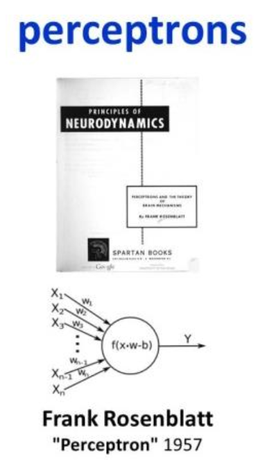
voie vers les réseaux multi -couches qui, en effet, peuvent calculer un XOR.
Une porte XOR détecte si les deux entrées binaires sont identiques : 0, 0 et 1, 1 deviennent 1 et 0,1 ou 1, 0 deviennent 0.
le deep learning exploite des réseaux de neurones avec un grand nombre de couches.
Dans le machine learning, les réseaux de neurones à une ou deux couches cachées permettent de créer des méthodes de classification d’objets plus sophistiquées.
les réseaux de neurones multi-modes qui exploitent des sources d’informations complémentaires, classiquement, de l’audio et de la vidéo, pour améliorer la qualité de la captation
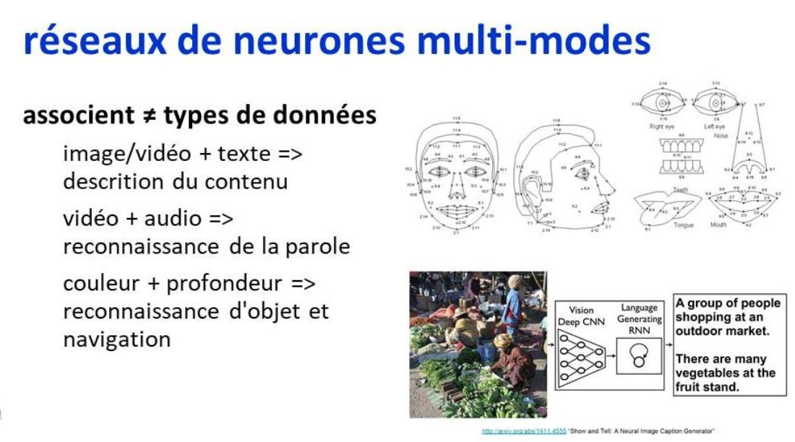
Figure. Réseaux de neurones multi-modes
Figure. Réseau de neurone et évaluation d'un prix
critères clé s discriminants
réseaux multi-couches dits feed forward
réseaux multi-couches dits feed forward : on les alimente en amont avec des données qui rentrent dans l es neurones de la première couche puis passent aux neurones de la couche su i- vante via leurs synapses, ainsi de suite jusqu’à la dernière couche qui donne une réponse
l’information circule de gauche à droite pendant l’exécution du réseau de neurone. On appelle aussi cela une inférence.
Comment entraîne-t-on un réseau de neurones, à savoir, comment ajuste -t-on le poids de chacune des synapses de chaque neurone du réseau ?
programmation de réseaux de neurones s’appuie sur des bibli o- thèques logicielles spécialisées comme cuDNN, MKL ou OpenNN.
Synaptic qui est une bibliothèque utilisable avec node.js dans un navigateur en JavaScript
bibliothèques de réseaux de neurones sont souvent exploitées elles-mêmes par des biblio-thèques de machine learning ou de deep learning, comme TensorFlow
Ces bibliothèques de réseaux de neurones sont souvent exploitées elles - mêmes par des bibli o- thèques de machine learning ou de deep learning, comme TensorFlow, qui masquent la complexité du pilotage de réseaux de neurones à bas niveau et permett ent par exemple de définir les modèles de réseaux de neurones convolutionnels de reconnaissance d’images et de les entraîner
C’est illustré dans le schéma ci-dessusqui empile les couches utilisées dans le développement de solutions d’IA avec un développement comprenant un framework d’asbtraction élevé utilisant un framework, comme le framework Kerasqui se situe au-dessus de TensorFlow, puis une biblio-thèque de réseau de neurones, suivie d’une bibliothèque de pilotage de GPU comme CUDA chez Nvidia, et enfin, un GPU ou un CPU au niveau matériel.
framework d’asbtraction élevé utilisant un framework comme Keras
Le deep learning est un sous - ensemble des techniques de machine learning à base de réseaux de neurones qui s’appuient sur des réseaux de neurones à plusieurs couches dites cachées.
permettent par exemple de décomposer de manière hiérarchique le contenu d’une donnée complexe comme de la voix ou une image pour la classifier
un réseau de neurones profond de type convolutionnel comprend plusieurs couches "cachées" qui transforment les données en entrée en données ayant un niveau d'abstraction supérieur
Le deep learning sert le plus souvent au traitement du langage, de la parole, du bruit, de l’écriture et des images.
d’autres usages dans les outils d’aide à la décision,
Le deep learning permet aussi de générer des contenus artificiels, extrapolés à partir de contenus réels
l s’appuie sur des modèles probabi listes comme son papa le machine learning
n’est pour l’instant pas adapté au raisonnement
le dee p learning doit tout aux progrès du matériel et à l’abondance de données pour entraîner les systèmes
des progrès conceptuels et pratiques font ava n- cer les réseaux de neurones et le deep learning, ne serait -ce qu’avec les réseaux génératifs.
Chaque année, un nouveau r é- seau de neurones rend obsolète ceux de l’année précédente. C’est un monde de remise en cause permanente de l’état de l’art.
Cette rétropropagat ion fonctionne en ajustant un par un les poids des neurones de chaque couche et en scannant un par un les objets du jeu de test pour optimiser le taux de reconnaissance, en minim i- sant ce que l’on appelle la « fonction d’erreur », soit la différence entre c e que génère le réseau pe n- dant sa phase d’ entraînement et la bonne réponse dont on dispose déjà dans la base d’ entraînement
L’apprentissage des réseaux de neurones est généralement supervisé et automatique !
les poids syna p- tiques des neurones sont ajustés automatiquement grâce à ces méthodes de rétropropagation pro- grammées dans le système d’entraînement
La plus couramment utilisée aujourd’hui est la descente stochastique de gradient (ou SGD pour stochastic gradient descent en anglais) , vue un peu plus loin, et qui permet d’améliorer la vitesse de convergence des réseaux lors de leur en- traînement
Réseaux de neurones récurrents et à mémoire
Ces RNN (Recurrent Neural Networks) permettent d’analyser des informations évoluant dans le temps comme la voix au niveau des phonèmes e t le langage au niveau de l’assemblage des mots. Ils sont en effet très utilisés dans les systèmes de reconnaissance de la parole, pour la traduction aut o- matique et la reconnaissance de l’écriture manuscrite.
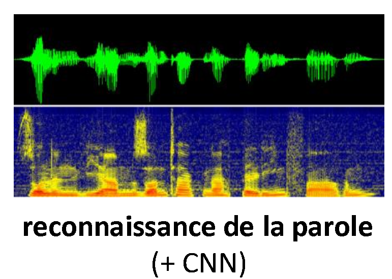
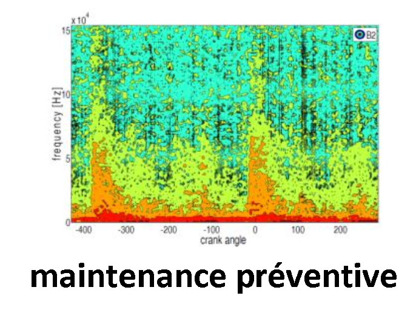
Je vous épargne les détails de toutes ces variantes de réseaux récurrents, ce d’autant plus que je n’ai pas encore très bien compris leur fonctionnement dans le détail . I ls sont difficiles à vulgariser 81 , bien plus que les réseaux de neurones convolutionnels que nous verrons un peu plus loin,
Ces réseaux transforment généralement les mots et phrases en vecteurs
L’un des points clés de ces réseau x est leur capacité à mémoriser des co n- textes 82
Time Delay Neural Networks (1989)
les TDNN permettent notamment de reconnaître des phonèmes dans la parole sans avoir à les positionner explicitement dans le temps 83
précurseurs des réseaux convolutionnels
établissant la supéri o- rité des réseaux de convolution pour la reconnaissance d’images face aux méthodes traditionnelles du machine learning.
principalement à réaliser de la classification d’objets,
522 Les CNN, appelés aussi ConvNets (convolutional neuron networks), utilisent p lusieurs techniques encha înées les unes avec les autres avec notamment des filtres et des feature maps qui consistent à identifier des formes dans les images , avec des niveaux d’abstraction allant du plus petit au plus grand.
Une feature map est une matrice de pixels qui cartographie de l’apparition d’un filtre donné dans l’image analysée
Cet entraînement est très consommateur de ressources machine et aussi d’accès à la mémoire mais bien plus efficace qu’un s imple réseau de neurones multicouches
Cela vient du fait que le réseau comprend moins de paramètres.
Chaque feature map générée par l’application des filtres sur l’image de départ se voit appliquée une réduction de résolution ( Pooling)
Citer : (Ezratty, 2018)
FTag: Ezratty-2018
Biblio: Ezratty, O. (2018). Les usages de l’intelligence artificielle. 522.
automd - automd-select -
L'IA deviendrait un complément de rationalité dans notre processus créatif.
Qu'est-ce qui limite notre capacité à créer ? Avons-nous besoin de rationalité dans notre processus de création ? En quoi déléguer la rationalité à une IA pendant que nous sommes en train de créer affectera le résultat ?
Impact de la délégation de la rationalité à l'IA dans le processus de création
numérique.
Exploration de la transcendance des limites de l'IH par la rationalité complémentaire de l'IA.
Observer:
note sur l'intelligence artificielle et ma compréhension de mes lectures actuelle du 19 juin 2020
Cette rationalité est habituellement limitée par notre volonté, le poids émotionnel de notre cerveau limbique et notre capacité d’optimisation. (Ezratty, 2018)
Nous avons une limite cognitive en tant qu'êtres humains.
@STCGoal paraphraser la définition suivante en y soustrayant l'inutile utilisation du mot problème.
L’IA est un ensemble de techniques permettant de résoudre des problèmes complexes en s’inspirant de mécanismes cognitifs humains, agissant de manière rationnelle en fonction de faits,données et expériences, et capables d’atteindre de manière optimale un ou plusieurs objectifs donnés.
La capacité humaines à tirer des conclusions basé sur des faits (l'objectivité) est limité par notre volonté et notre émotivité.
L'intelligence artificielle est un ensemble d'outils qui permet d'atteindre une résolution.
[...] le poids émotionnel de notre cerveau limbique [...]
L'intelligence artificielle maintenant ensemble d'outils qui permet d'atteindre un certain endroit de résolution et ainsi transcender la limite émotionnelle et cognitive de l'humain. (La volonté, comment l'intégrer dans ce paragraphe)
Le poids émotionnelle de notre cerveau limbique limite notre capacité à rationaliser.
L'intelligence artificielle devient un complément à notre intelligence puisque sa spécialité se trouve dans la reconnaissance des faits et d'en tirer une conclusion rationnel.
L'IA est une ensemble de techniques qui permettent de transcender les limites ra
tionnelles de l'IH. Elle s'inspire de la mécanique cognitive humaine en agissant
en fonction de faits, de données et d'expériences afin d'atteindre de manière opti
male un ou plusieurs objectifs. (Ezratty, 2018)
@footer autopublished from PDS Draft app 2020-06-19 2020-06-19-14-47-17
<!--- o:42.1.1.1 -->
<!--- y:txt -->
"Apprentissage automatique" (p. 42.1)
Titre
<!--- o:42.1.2.1 -->
<!--- y:txt -->
"Le vaste domaine du machine learning, ou apprentissage automatique, est défini comme le champ de l’IA qui utilise des méthodes probabilistes pour apprendre à partir des données sans être programmé explicitement" (p. 42.1)
Peut-on appeler cela de programmation implicite ?
<!--- o:42.1.4.1 -->
<!--- y:txt -->
"D’un point de vue pratique, le machine learning vise notamment à identifier des tendances, à faire des prévisions sur des données (régressions linéaires et non linéaires), à découvrir des corrélations entre données et événements (comme pour déterminer si un logiciel est un virus, si un client risque de quitter un service sur abonnement ou au contraire, s’il sera intéressé par telle ou telle offre ou qu’un tableau clinique d’un patient est symptomatique de l’émergence d’une pathologie de longue durée), à segmenter des jeux de données (comme une base clients), à reconnaître des objets (des lettres, des objets dans des images), le tout en exploitant des données d’entraînement" (p. 42.1)
Prévision de la tendance. Et autres!
<!--- o:42.1.6.1 -->
<!--- y:txt -->
"Selon son père fondateur Arthur Samuel, qui en définit le terme en 1959, le machine learning donne aux machines la capacité d’apprendre sans être explicitement programmées" (p. 42.1)
Il est possible d'apprendre aux machines de façon non explicite.
<!--- o:42.1.7.1 -->
<!--- y:txt -->
" Le machine learning requiert presque toujours de faire des choix de méthodes et des arbitrages manuels pour les data scientists et les développeurs de solutions" (p. 42.1)
Il y a des opérations manuelles contraignante. Mais quelle direction Montréal fournissent le? Mais quelle direction un réel fourni stable? Mais quelle direction réel fournissent-t-elle?
<!--- o:42.1.8.1 -->
<!--- y:txt -->
" Le choix des méthodes reste pour l’instant manuel, même si certaines startups essayent d’automatiser ce processus" (p. 42.1)
Il y a actuellement des essais d'automatiser cette étape
<!--- o:42.1.10.1 -->
<!--- y:txt -->
"L’apprentissage automatique s’appuie sur des données existantes" (p. 42.1)
Existe. Il doit y avoir des données existantes pour pouvoir utiliser l'apprentissage automatique.
<!--- o:42.1.11.1 -->
<!--- y:txt -->
" Elles lui permettent de produire des prévisions, des segmentations ou des labels à partir de la généralisation d’observations" (p. 42.1)
Différents types de résultat de l'apprentissage automatique
<!--- o:42.1.12.1 -->
<!--- y:txt -->
" La qualité et la distribution statistique des données d’entraînement doit permettre de faire des prévisions de bon niveau" (p. 42.1)
Qu'est-ce qu'une distributions statistiques?
<!--- o:42.1.13.1 -->
<!--- y:txt -->
" Si les données ne représentent pas correctement l’espace du possible, les prévisions ou classifications ne seront pas bonnes et elles seront biaisées" (p. 42.1)
Il va y avoir une couverture complète de l'ensemble du spectre de données pour obtenir des résultats optimal
<!--- o:42.1.14.1 -->
<!--- y:txt -->
" Les données sont donc absolument critiques pour la qualité des résultats" (p. 42.1)
Les données sont importantes
<!--- o:42.1.16.1 -->
<!--- y:txt -->
"Un bon système de machine learning doit pouvoir s’adapter à différentes contraintes comme une évolution permanente des données d’entraînement, ainsi que leur incomplétude et leur imperfection" (p. 42.1)
L'adaptabilité
La récréation permet quoi exactement?
<!--- o:42.1.19.1 -->
<!--- y:txt -->
"L’apprentissage supervisé avec la classification qui permet de labelliser des objets comme des images et la régression qui permet de réaliser des prévisions sur des valeurs numériques" (p. 42.1)
<!--- o:42.1.20.1 -->
<!--- y:txt -->
" L’apprentissage est supervisé car il exploite des bases de données d’entraînement qui contiennent des labels ou des données contenant les réponses aux questions que l’on se pose" (p. 42.1)
L'entraînement consiste à donner de l'information ou plutôt un questionnement en donnant des réponses. Je recommence. Dans l'entraînement, nous donnons des questions et des réponses afin qu'il puisse s'entraîner à reconnaître ensuite
<!--- o:42.1.21.1 -->
<!--- y:txt -->
" En gros, le système exploite des exemples et acquiert la capacité à les généraliser ensuite sur de nouvelles données de production" (p. 42.1)
Il y a une généralisation possible après l'entraînement sur des données de production.
Titre
Peut-on appeler cela de programmation implicite ?
Prévision de la tendance. Et autres!
Il est possible d'apprendre aux machines de façon non explicite.
Il y a des opérations manuelles contraignante. Mais quelle direction Montréal fournissent le? Mais quelle direction un réel fourni stable? Mais quelle direction réel fournissent-t-elle?
Il y a actuellement des essais d'automatiser cette étape
Existe. Il doit y avoir des données existantes pour pouvoir utiliser l'apprentissage automatique.
Différents types de résultat de l'apprentissage automatique
Qu'est-ce qu'une distributions statistiques?
Il va y avoir une couverture complète de l'ensemble du spectre de données pour obtenir des résultats optimal
Les données sont importantes
L'adaptabilité
La récréation permet quoi exactement?
L'entraînement consiste à donner de l'information ou plutôt un questionnement en donnant des réponses. Je recommence. Dans l'entraînement, nous donnons des questions et des réponses afin qu'il puisse s'entraîner à reconnaître ensuite
Il y a une généralisation possible après l'entraînement sur des données de production.
| no | qt | q | r | n |
| 42.1.1.2 | dic | Titre | | |
| -- |---|--------|--------| ---- |
| 42.1.2.2 | dic | Peut-on appeler cela de programmation implicite ? | | |
| 42.1.4.2 | dic | Prévision de la tendance. Et autres! | | |
| 42.1.6.2 | dic | Il est possible d'apprendre aux machines de façon non explicite. | | |
| 42.1.7.2 | dic | Il y a des opérations manuelles contraignante. Mais quelle direction Montréal fournissent le? Mais quelle direction un réel fourni stable? Mais quelle direction réel fournissent-t-elle? | | |
| 42.1.8.2 | dic | Il y a actuellement des essais d'automatiser cette étape | | |
| 42.1.10.2 | dic | Existe. Il doit y avoir des données existantes pour pouvoir utiliser l'apprentissage automatique. | | |
| 42.1.11.2 | dic | Différents types de résultat de l'apprentissage automatique | | |
| 42.1.12.2 | dic | Qu'est-ce qu'une distributions statistiques? | | |
| 42.1.13.2 | dic | Il va y avoir une couverture complète de l'ensemble du spectre de données pour obtenir des résultats optimal | | |
| 42.1.14.2 | dic | Les données sont importantes | | |
| 42.1.16.2 | dic | L'adaptabilité | | |
| 42.1.19.2 | dic | La récréation permet quoi exactement? | | |
| 42.1.20.2 | dic | L'entraînement consiste à donner de l'information ou plutôt un questionnement en donnant des réponses. Je recommence. Dans l'entraînement, nous donnons des questions et des réponses afin qu'il puisse s'entraîner à reconnaître ensuite | | |
| 42.1.21.2 | dic | Il y a une généralisation possible après l'entraînement sur des données de production. | | |